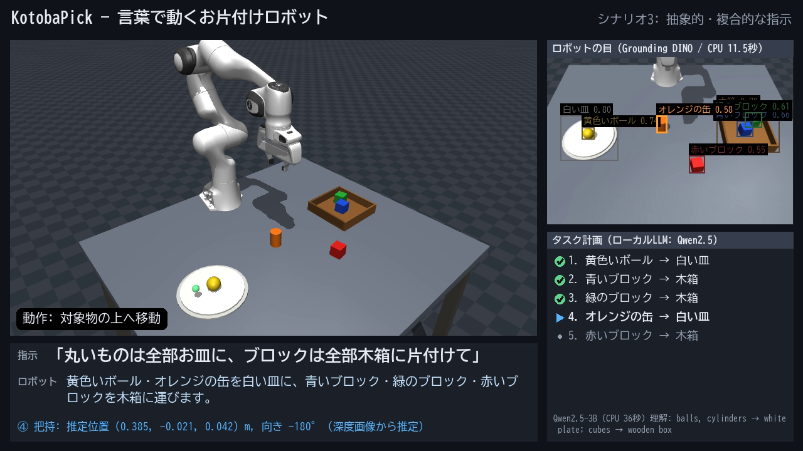

KotobaPick — 言葉で動くお片付けロボット
Physical AI 応用1講座 最終課題「AI×ロボティクスによる創造的タスクの実現」説明資料
シミュレータ MuJoCo 3.16 / Franka Panda（7軸アーム＋平行グリッパ）
使用AI Grounding DINO tiny（物体検出）・Qwen2.5-3B-Instruct（LLM）。いずれも推論のみ
実行環境 ノートPCのCPUのみ（GPU・クラウドAPI不使用）
動画 2分35秒（シナリオ2〜4のロボット動作は2倍速。画面右上に表示）
1. 課題の概要と目的
「丸いものは全部お皿に、ブロックは全部木箱に片付けて」のような日本語の指示だけ で、机の上の物を認識し、手順を考え、掴んで片付けるロボットを作りました。対象物の位置・向きはカメラ画像（RGB-D）から推定 し、どの物をどこへ運ぶかは指示文から LLM が決めます 。シミュレータが持つ物体の真値は、シーンの生成・デモ用の外乱の注入・精度評価にだけ使っています。
目的 は、言葉で頼める家庭・介護・物流向けロボットの基本機能（見る・考える・動く・確かめる）を、公開 AI モデルの推論だけで一通りつなげ、実際に動く形で示すことです。AI はすべて手元の CPU で動かし、画像や会話を外部に送らない構成にしました。

図1 デモ動画の画面（左: ロボットの動作、右上: 物体検出の結果、右下: LLM の計画と進み具合、下: 指示と処理の説明）
2. システム構成
日本語の指示 「丸いものは
→
① シーン認識 Grounding
→
② タスク計画 Qwen2.5-3B
→
③ 再認識 対象と置き場所
→
④⑤ 把持・配置 IK＋
→
⑥ 結果確認 位置・高さ・
手順ごとに繰り返し、失敗したら③からやり直す
→
⑦ 最終確認 全手順の結果を
図2 処理の流れ（青: AI による認識・計画、橙: 動作生成、緑: 画像による確認）。LLM に渡すのは画像ではなく、①の認識結果（物体のラベルと「left」などの大まかな位置）と指示文です。実行順（土台になる物を先に動かす）、把持・配置の動作、容器内の置き場所の選び方はプログラムで定義しています。該当する物体がない指示や不正な計画では、ロボットは動かずにその旨を報告します。
3. 工夫した点
① 検出器を比較して選び、問い合わせ方を工夫
② 小型 LLM を確実に使うための問題分解 一括生成 4/12 → 分解方式 12/12 、1.5B でも 5/12 → 10/12 に上がりました。一方、一括生成のままモデルを 1.5B から 3B に大きくしても正解率は上がらず（5/12 → 4/12）、改善の主因はモデルの大きさではなく問い方の設計でした。
③ 閉ループ化：「見てから動く」「動いた後に確かめる」
④ AI の「考え」が見える動画
⑤ PC 環境を汚さない構成 .cache/ に置き、システムの Python や PATH は変更していません。Windows の MuJoCo が日本語のフォルダ名を開けない問題は、モデルファイルをメモリ経由で読み込んで回避しました。
4. 結果
シナリオ 指示 → LLM の理解（構造化の結果） 結果（最終確認） 1 基本 「赤いブロックを木箱に入れて」the red cube → wooden box 1/1 達成 （再試行なし）2 積み上げ 「緑のブロックを青いブロックの上に積んで」the green cube → on the blue cube 1/1 達成 （土台の高さを深度から推定）3 抽象的・複合的 「丸いものは全部お皿に、ブロックは全部木箱に片付けて」[balls, cylinders] → white plate [cubes] → wooden box 5/5 達成 （すべて1回目で成功）4 外乱からの回復 「ブロックを全部お皿に集めて」[cubes] → white plate 3/3 達成 （落下を検知して1回再試行、動かされた物体にも再認識で追従）5 できない指示 「紫のブロックを木箱に入れて」the purple cube → wooden box（該当する物体なし） 計画なしと判断し、動かずに報告
評価 結果 認識精度（ランダム配置10シーン） ラベル 70/70 正解、水平位置の誤差 平均 4.3 mm（最大 7.0 mm）、ブロックの向きの誤差 平均 3.1°（真値は評価にのみ使用） 計画の正解率（指示12種） Qwen2.5-3B: 一括生成 4/12 → 分解方式 12/12 、Qwen2.5-1.5B: 5/12 → 10/12（12問中10問は開発中に使った問題） 推論時間（CPU） 物体検出 12〜15 秒/回、LLM による計画 20〜101 秒/回（動画では待ち時間を短縮）
5. 考察と今後の課題
推論速度 : GPU を使わない CPU 推論のため、実時間で動かすには GPU の利用、モデルの量子化、検出の高速化が必要です。LLM の理解力 : 評価は12問と小規模で、うち10問は開発に使った問題のため、未知の言い回しでは誤る可能性があります。曖昧な指示を聞き返す対話機能や、視覚言語モデルの利用が考えられます。環境と動作の単純さ : 物体は単色の単純形状で、深度画像にノイズがありません。同じラベルの物体が複数ある場面、真上以外からの把持、経路の衝突検査には未対応です。実機への展開 : 認識・計画・動作の各部を ROS 2 のノードに置き換えやすい構成にしてあり、次は SO-101 などの安価なアームと RGB-D カメラで同じパイプラインを試したいと考えています。
使用モデル・アセット : Grounding DINO tiny（Apache-2.0）、Qwen2.5-3B-Instruct（Qwen Research License、非商用の学習目的で使用）、比較用に Qwen2.5-1.5B-Instruct と OWLv2（Apache-2.0）、ロボットモデルは MuJoCo Menagerie の Franka Panda（Apache-2.0）。コード : GitHub リポジトリ（README にセットアップと再現の手順を記載）。